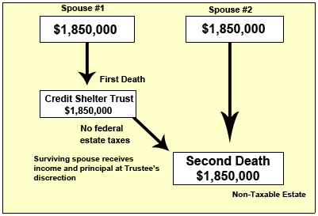

|
|
Preserving the Applicable Exclusion Amount in the First Estate Prior to Portability
On the previous page, we provided the example of Joe and Martha Average, who needed additional planning to optimally utilize both spouses’ Applicable Exclusion Amounts in the days before the advent of portability. On this page and the next few that follow, we introduce you to planning techniques that were developed in the pre-portability years to accomplish this.
It is important that you become familiar with these planning techniques since they continue to have application in today’s environment, as we shall later explain. It is also important that you be familiar with these concepts because many clients you will encounter established their estate plans pror to 2011 when portability went into effect, and these plans will likely reflect these techniques.
The Credit Shelter Trust
Continuing with the the example of Joe and Martha Average from the previous page, they had a combined estate of $3.7 million in 2009 and each spouse had an Applicable Exclusion Amount of $3.5 million. How could they make use of both Exclusion Amounts to fully protect their combined estates?
This was typically accomplished by NOT leaving everything to the surviving spouse! One option was to leave the assets that are covered by the Applicable Credit/Exclusion Amount to other heirs, but then the assets would not be available to provide for the needs of the suriving spouse. Instead, most people preffered to utilize a Credit Shelter Trust.
The Credit Shelter Trust ( sometimes referred to as the Applicable Exclusion Trust; also known as a "By-Pass Trust" because it by-passes the surviving spouses estate or a "Family Trust" because the entire family is often named as beneficiaries) is typically created upon the death of the first spouse.
Here is how it works :
When the first spouse dies, the Applicable Credit Amount is generally applied against as much of the deceased spouse’s estate as possible.
These "sheltered" assets are transferred into a "Credit Shelter Trust." Since the surviving spouse cannot control these assets, his will keeps them out of the surviving spouse’s estate and protects them from being taxed when the second spouse dies.
Any remaining assets, which are not covered by the deceased spouse’s Applicable Credit Amount, are transferred to the surviving spouse (or, as we shall explore on the following page, into a trust for the surviving spouse that will be included in the surviving spouse’s estate). These remaining assets will be protected from taxation upon transfer due to the unlimited marital deduction.
The surviving spouse generally receives income from the Credit Shelter Trust and, if the document allows, can receive principal at the trustee's discretion.
The Credit Shelter Trust can also be used for the children. For this reason, it is often referred to as a "family trust." In fact, after the death of the surviving spouse, the trust can continue for the benefit of the children.
The end result is that both Applicable Credit Amounts are utilized and the surviving spouse does not have to forego benefit of all the assets.
Important Note – For this strategy to work, both spouses need to have assets in their individual names. This is because it is impossible to know which spouse will die first. For example, if the first spouse dies not owning assets, then there is nothing with which to fund the trust. For this reason, most couples adopting this strategy will split assets to the degree necessary for the strategy to be optimized for either death.
Illustration
If Joe and Martha Average had divided their assets equally (since they couldn’t predict which of them would die first) and utilized the Credit Shelter Trust technique in their estate planning documents, the end result would be no estate taxes if they both died in 2009, at a savings of $90,000. This is because half of the assets would have been “sheltered from taxation upon the first death and excluded from the estate of the surviving spouse,

For many years, this was one of the most powerful estate planning techniques available for couples, and its features were second nature to the planner.
For a more detailed summary of the Credit Shelter Trust, proceed to the next page.